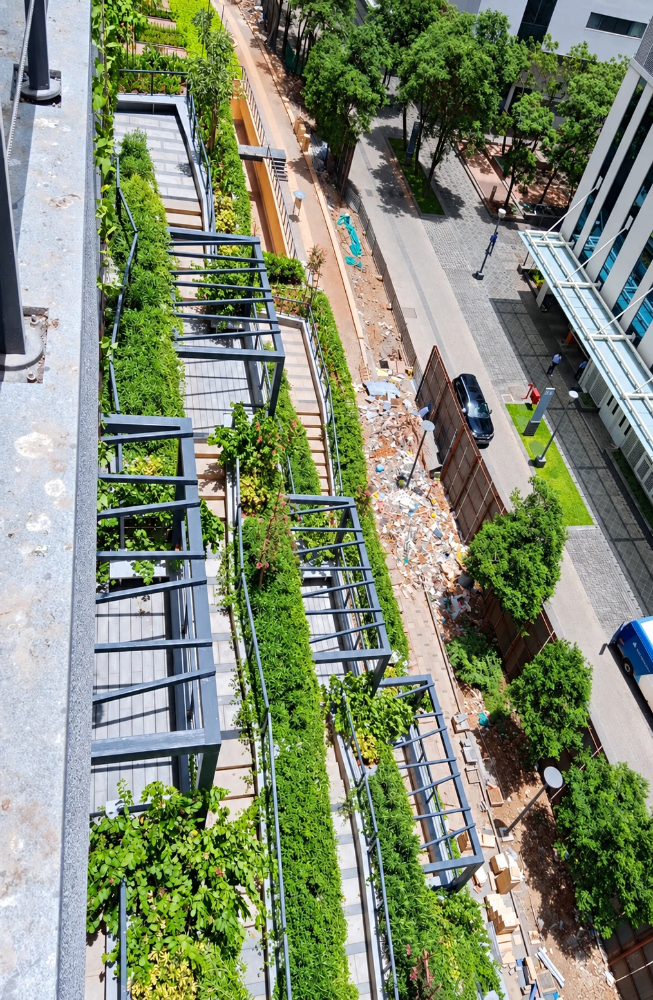
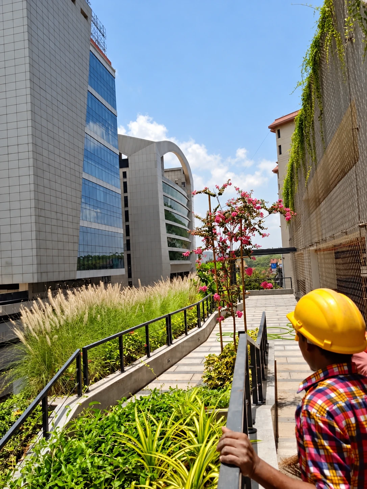
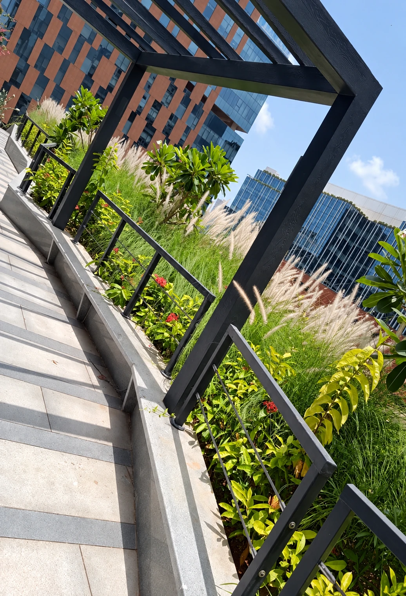

Softscape & Plantation
Lawns, plantation, trees, shrubs, soil preparation and garden development.
Learn morePlanted walkways and elevated deck gardens with ornamental grasses and shrubs.



Lawns, plantation, trees, shrubs, soil preparation and garden development.
Learn more